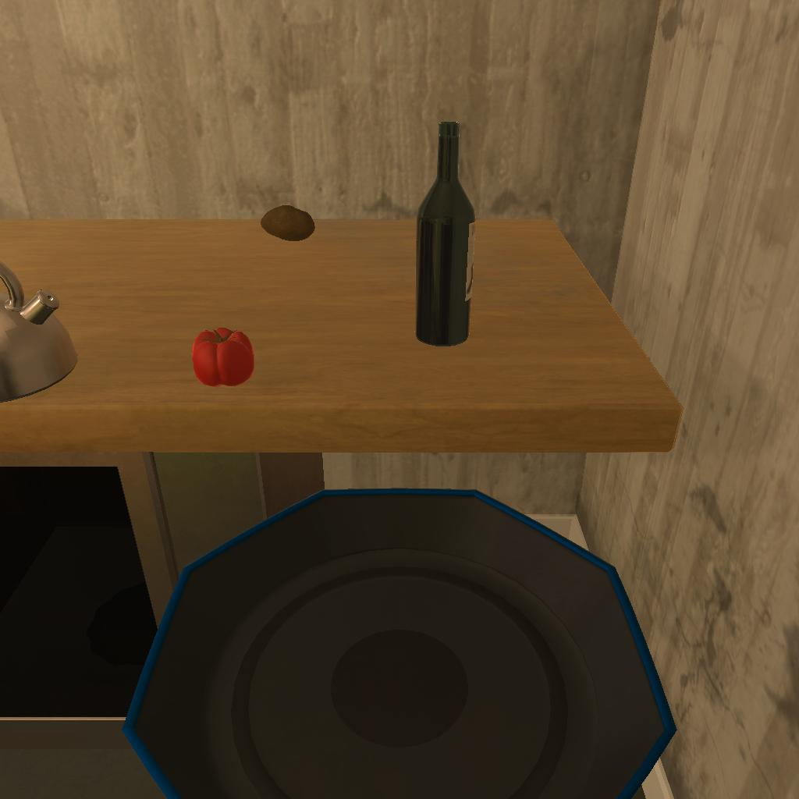

---------------------------------------------------------task: 26---------------------------------------------------------
--------------------------------------------------------------------------------------------------------------------------------------------------------------------
--------------------------------------------------------------------------------------------------------------------------------------------------------------------
Step:--------------------------------------------------------------------------16-------------------------------------------------------------------------------
----------------------------------------
VLM Prompt:
**Task**
Please perform as an embodied AI agent. Our final objective is to put two kettle in cabinet. Below is the plan for completing the task, the current observation, alongside historical data and admissible actions for the next step. Please determine the best action for the next step!
**Plan**
Below is a detailed step-by-step plan to complete the task.
1. Find a kettle.
2. Pick up the kettle.
3. Find a cabinet.
4. Place the picked-up kettle in the cabinet.
5. Find another kettle.
6. Pick up the kettle.
7. Return to the previously located cabinet.
8. Place the second picked-up kettle in the cabinet with the first kettle.
**Current Observation**
Displayed is an image capturing the current position of the agent.
Objects in The Image: ['kettle', 'kiwi', 'tomato', 'wine bottle', 'kitchen counter', 'pan', 'wall']
**History Information**
Displayed are the previous observations with their corresponding actions.
State 0:
No history.
State 1:
1. Step Index in the Plan: 1
2. Objects: Sink (without kettle)
3. Action: go to countertop 1
State 2:
1. Step Index in the Plan: 1
2. Objects: Countertop, Lettuce, Apple, Bread, Plastic Cup
3. Action: go to coffeemachine 1
State 3:
1. Step Index in the Plan: Unknown (assumed next step after finding the statue)
2. Objects: Coffee Maker, Coffee Cup
3. Action: go to cabinet 1
State 4:
1. Step Index in the Plan: Likely after finding the kettle
2. Objects: Coffee Machine, Coffee Cup, Wooden Counter
3. Action: open cabinet 1
State 5:
1. Step Index in the Plan: Unknown
2. Objects: Coffee Maker, Coffee Cup, Wooden Counter, Cabinet 1 (opened)
3. Action: close cabinet 1
State 6:
1. Step Index in the Plan: Unclear (either verifying kettle placement or finding another kettle)
2. Objects: Coffee Maker, Cup, Table, Saucer, Sponge (none relevant to the current step)
3. Action: go to cabinet 2
State 7:
1. Step Index in the Plan: Unclear (potentially 3 or 7)
2. Objects: Kitchen counter, Sink, Plant, Cucumber, Knife, Bread, Cabinet doors
3. Action: open cabinet 2
State 8:
1. Step Index in the Plan: 7 or 8
2. Objects: Cabinet 2, Kettle inside Cabinet
3. Action: take pan 1 from cabinet 2
State 9:
1. Step Index in the Plan: 8
2. Objects: Frying Pan, Cabinet 2
3. Action: go to cabinet 3
State 10:
1. Step Index in the Plan: 5
2. Objects: Kettle, Countertop, Frying Pan, Cabinet
3. Action: put pan 1 in/on cabinet 3
State 11:
1. Step Index in the Plan: 6
2. Objects: Kettle, Kitchen Counter, Frying Pan
3. Action: go to cabinet 2
State 12:
1. Step Index in the Plan: 6
2. Objects: Kettle
3. Action: go to countertop 1
State 13:
1. Step Index in the Plan: Unclear (possibly step 5 or 6)
2. Objects: Lettuce, Apple, Bread, Frying Pan (no kettle visible)
3. Action: go to cabinet 2
State 14:
1. Step Index in the Plan: Unknown (searching for the second kettle)
2. Objects: Kitchen Counter, Sink, Speaker, Other Items, Pan (previously acquired)
3. Action: go to cabinet 3
State 15:
1. Step Index in the Plan: 6 or 7
2. Objects: Frying Pan, Cabinet
3. Action: go to cabinet 4
State 16:
1. Step Index in the Plan: 5
2. Objects: Kitchen Counter, Sink, Cabinet
3. Action: go to cabinet 3
**Admissible Actions**
(1): go to countertop 1
(2): go to coffeemachine 1
(3): go to cabinet 1
(4): go to cabinet 2
(5): go to drawer 1
(6): go to sink 1
(7): go to sinkbasin 1
(8): go to garbagecan 1
(9): go to drawer 2
(10): go to fridge 1
(11): go to microwave 1
(12): go to dresser 1
(13): go to sidetable 1
(14): go to drawer 3
(15): go to drawer 4
(16): go to drawer 5
(17): go to drawer 6
(18): go to drawer 7
(19): go to drawer 8
(20): open cabinet 3
(21): close cabinet 3
(22): put pan 1 in/on cabinet 3
(23): examine pan 1
**Analysis Guideline**
1. Analyze the history and current observation, and then determine our current step in the plan and our current place.
2. List all visible objects related to the task in the current observation, without summarizing any as "various items."
3. Analyze the objects in the current observation based on the history and the requirements for the current step, and then determine if we can complete the step with the current observation.
4. Analyze and decide on the most appropriate action to take.
5. Summarize the analysis using the following format: "Analysis: [The summarization of the analysis], The Most Appropriate Action: (i which is the integer.): [Selected action]"
**Notes**
1. We must complete each step of the plan in order and cannot skip steps when the previous ones are not finished.
2. For "Go to" actions listed as "go to xxx [n]", interpret this as there are n distinct actions available: "go to xxx 1", "go to xxx 2", ..., "go to xxx n". Select one specific action from these options instead of using "go to xxx [n]".
3. If receptacles such as drawers, cabinets, and so forth are closed in the current observation, we may try to open them.
4. Pay attention to synonyms and ensure clarity in the terms used.
5. We must determine and provide the single action which must be in the **Admissible Actions**.
6. If there is no history available, we are at the first step and the current place is "Unknown".
**Answer**
Please select the most suitable action by following the **Analysis Guideline**, keeping the above **Notes** in mind.
----------------------------------------
----------------------------------------
VLM Response:
Analysis: The current observation shows that the agent is holding a pan and viewing a countertop with several items on it, including a kettle. According to the plan, the agent should have already picked up the first kettle and placed it in a cabinet (steps 1 to 4), and the next steps involve finding another kettle, picking it up, returning to the previously located cabinet, and placing the second kettle with the first one (steps 5 to 8). Given the history, the agent has interacted with various cabinets and has previously placed a pan in a cabinet, which was not part of the original plan. This indicates there may have been some deviation from the plan. However, the current step seems to be step 5 (finding another kettle) or step 6 (picking up the kettle), as there is a kettle visible on the countertop.
The visible objects related to the task in the current observation are a kettle, a pan (already in the agent's possession), and a kitchen counter.
Since there is a kettle visible on the countertop, the agent can proceed with step 6 (picking up the kettle). The pan currently being held is not required for the task completion and should ideally be placed down before picking up the kettle.
The most appropriate action to take is to place the pan in or on cabinet 3, as this is the only "put" action available that relates to the pan the agent is currently holding. This will free the agent's hands to pick up the kettle in the next step.
The Most Appropriate Action: (22): put pan 1 in/on cabinet 3
----------------------------------------
----------------------------------------
>>> Refine VLM Response and Get Pure Action: put pan 1 in/on cabinet 3
----------------------------------------
-----------------------------------------------------------------
Running time: 21.818861722946167 seconds
Total Money: 0
-----------------------------------------------------------------
-----------------------------------------------------------------
Summarization Prompt:
**Context**
Analysis: Since there is no history information, we are at the first step in the plan, which is to find a statue. The current place is unknown. In the current observation, we see a floorlamp next to an armchair with a small table that has a small object on it, which could potentially be the statue we are looking for. Since the plan requires us to find a statue first and it appears there might be one on the table next to the armchair, we should investigate this object to determine if it is the statue we need.
The Most Appropriate Action: (1): go to armchair 1
**Summary**
1. Step Index in the Plan: 1
2. Objects: Floorlamp, Armchair, Small Table, Small Object (potential statue)
3. Action: go to armchair 1
**Context**
Analysis: The current observation shows that the agent is holding a pan and viewing a countertop with several items on it, including a kettle. According to the plan, the agent should have already picked up the first kettle and placed it in a cabinet (steps 1 to 4), and the next steps involve finding another kettle, picking it up, returning to the previously located cabinet, and placing the second kettle with the first one (steps 5 to 8). Given the history, the agent has interacted with various cabinets and has previously placed a pan in a cabinet, which was not part of the original plan. This indicates there may have been some deviation from the plan. However, the current step seems to be step 5 (finding another kettle) or step 6 (picking up the kettle), as there is a kettle visible on the countertop.
The visible objects related to the task in the current observation are a kettle, a pan (already in the agent's possession), and a kitchen counter.
Since there is a kettle visible on the countertop, the agent can proceed with step 6 (picking up the kettle). The pan currently being held is not required for the task completion and should ideally be placed down before picking up the kettle.
The most appropriate action to take is to place the pan in or on cabinet 3, as this is the only "put" action available that relates to the pan the agent is currently holding. This will free the agent's hands to pick up the kettle in the next step.
The Most Appropriate Action: (22): put pan 1 in/on cabinet 3
Please summarize the context by following above examples when providing the summary, and ensure that only the summary is included, without any extra explanation.
**Summary**
-----------------------------------------------------------------
-----------------------------------------------------------------
Summarization Response:
1. Step Index in the Plan: 5 or 6
2. Objects: Kettle, Pan, Kitchen Counter
3. Action: put pan 1 in/on cabinet 3
-----------------------------------------------------------------
-----------------------------------------------------------------
Text Observation:Nothing happens.
-----------------------------------------------------------------
UNSUCCEED